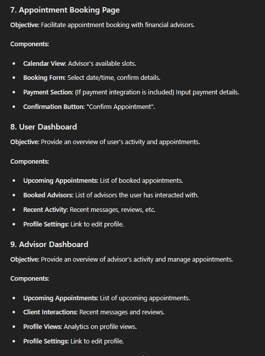
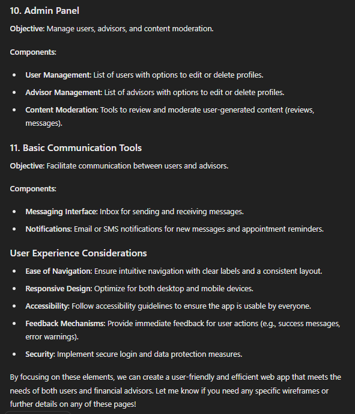

From Concept to Code: Accelerating Web App Development with ChatGPT-4o
Introduction
Hey there, fellow developers and tech enthusiasts! Welcome back to my ongoing journey of speedrunning web app development using the incredible capabilities of ChatGPT. If you’ve been following along, you know that I’m building MyAdvisor, a platform that connects users with financial advisors. In my first post, I shared how ChatGPT helped me outline the MVP and set up the backend. Today, we’re diving into the next phase: documentation, frontend development, and some unexpected challenges. Let's embark on this exciting ride together!
Documenting the API with Swagger
One of the first tasks I tackled this week was documenting the API. Good documentation is crucial for any project, especially when you want to ensure that other developers can easily understand and contribute to your code. I chose Swagger for this purpose because of its powerful interface and ease of use.
I started by prompting ChatGPT for guidance on setting up Swagger with my existing Node.js and Express backend. With a few detailed instructions and code snippets, I had a basic Swagger setup running. It was amazing to see the API endpoints visually represented, but there was a slight hiccup: the endpoints weren’t grouped by root keyword as I had hoped.
This required some additional prompting and code refactoring. I asked ChatGPT for advice on how to organize the endpoints better, and after a few iterations, I was satisfied with the result. Here’s a screenshot of the final Swagger documentation:
The whole process highlighted one of the key strengths of using GPT: rapid iteration and refinement. Every time I encountered an issue, I could get immediate feedback and solutions, keeping the development momentum high.
Choosing the Right Frontend Technology
With the API documentation in place, it was time to venture into frontend development. Now, I have to admit, frontend isn’t my strongest suit. I was excited but also a bit apprehensive about diving into this part of the project. So, naturally, I turned to ChatGPT for advice.
I started by describing my backend setup and asking for recommendations on the best frontend technology to use. Here’s the detailed prompt I used: "Imagine you are an expert frontend software engineer and product designer. I need your help to design the pages for my web app, focusing on user experience. The requisites of my app are these:" [Quote from previous post ]
GPT provided a comprehensive response, detailing various design principles and suggesting some user-friendly layouts. Here’s a placeholder for the response image:
 
Following this, I needed to decide on the most suitable frontend framework. My priorities were performance and simplicity in the development process. Once again, GPT was on point, recommending frameworks like React.js, Vue.js, and Angular, and explaining the pros and cons of each. Here’s a placeholder for the recommendation:
After careful consideration, I decided to go with React.js due to its component-based architecture and robust community support. Armed with this knowledge, I began setting up the frontend project, but soon ran into an organizational mess.
Organizing the Project Structure
As I started coding, I realized the files in my project were getting a bit disorganized. I wasn’t sure about the best practices for structuring a React project. Once again, ChatGPT came to the rescue. I initiated a new conversation, asking for a clear and maintainable project structure.
GPT provided a detailed breakdown of how to organize components, services, and other assets. This guidance was incredibly helpful. I restructured my project accordingly, and everything started to look much cleaner and more professional. It was a great reminder of how a well-organized project can make development so much smoother.
Tackling CORS Issues
No development journey is complete without some troubleshooting, right? One of the challenges I faced was dealing with Cross-Origin Resource Sharing (CORS) issues. As I integrated the frontend with the backend API, I encountered some pesky CORS errors.
I described the issue to ChatGPT, and it provided clear instructions on how to configure my Express server to handle CORS properly. With a few adjustments to my server setup, the CORS issues were resolved, and the frontend was able to communicate with the backend seamlessly.
Exploring New Programming Languages
In an effort to challenge myself further, I decided to explore different programming languages and technologies as part of MyAdvisor’s development. This would not only broaden my skill set but also allow me to bring fresh perspectives and innovative solutions to the project. I asked ChatGPT for advice on integrating different languages into my workflow.
GPT suggested a few modern and widely-used languages such as TypeScript, Python, and Go, each offering unique advantages. For instance, TypeScript could provide better type safety and tooling for the frontend, while Python could be used for data analysis or backend services due to its simplicity and vast libraries. Go was recommended for its performance and scalability in backend services.
Following this guidance, I started integrating TypeScript into my React project. It was a bit challenging at first, but GPT’s detailed explanations and examples made the transition smoother. This experience highlighted the value of continuous learning and adapting new technologies to enhance a project’s robustness.
Enhancing Capabilities with Context
One interesting observation I made while working with ChatGPT was the importance of providing detailed context in my prompts. The more context I gave, the more accurate and helpful the responses were. For instance, when I included specifics about my existing backend setup or the exact issues I was facing, GPT’s solutions were spot-on.
This taught me a valuable lesson: effective communication with AI involves clear and detailed instructions. By refining my prompts and giving comprehensive context, I was able to leverage GPT’s capabilities to their fullest.
Conclusion
This week has been an incredible journey, filled with learning and development. From documenting the API with Swagger to diving into frontend development and tackling challenges like project organization and CORS issues, ChatGPT has been an invaluable companion. The ability to iterate quickly and get expert advice on demand has truly transformed the way I approach development.
I hope you’ve enjoyed following along with my progress. I’m excited to see where the next steps take me as I continue to build and refine MyAdvisor. If you have any questions, suggestions, or simply want to share your thoughts, please leave a comment below. Let’s keep the conversation going and continue learning from each other!
Stay tuned for more updates and insights in the next post. Happy coding!